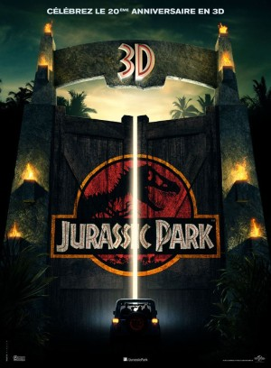
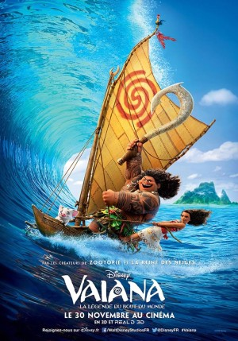
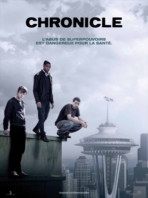

Voyageur dans le coeur et geek dans l'âme, j'ai décidé de me lancer dans le codage. Mon but: Coder des applications WINDOWS.
Accès rapide au Microsoft App Store|  |
Jurassic ParkNe pas réveiller le chat qui dort... C'est ce que le milliardaire John Hammond aurait dû se rappeler avant de se lancer dans le "clonage" de dinosaures. C'est à partir d'une goutte de sang absorbée par un moustique fossilisé que John Hammond et son équipe ont réussi à faire renaître une dizaine d'espèces de dinosaures. Il s'apprête maintenant avec la complicité du docteur Alan Grant, paléontologue de renom, et de son amie Ellie, à ouvrir le plus grand parc à thème du monde. Mais c'était sans compter la cupidité et la malveillance de l'informaticien Dennis Nedry, et éventuellement des dinosaures, seuls maîtres sur l'île... |
|  |
Vaiana, la légende du bout du mondeIl y a 3 000 ans, les plus grands marins du monde voyagèrent dans le vaste océan Pacifique, à la découverte des innombrables îles de l'Océanie. Mais pendant le millénaire qui suivit, ils cessèrent de voyager. Et personne ne sait pourquoi... Vaiana, la légende du bout du monde raconte l'aventure d'une jeune fille téméraire qui se lance dans un voyage audacieux pour accomplir la quête inachevée de ses ancêtres et sauver son peuple. Au cours de sa traversée du vaste océan, Vaiana va rencontrer Maui, un demi-dieu. Ensemble, ils vont accomplir un voyage épique riche d'action, de rencontres et d'épreuves... En accomplissant la quête inaboutie de ses ancêtres, Vaiana va découvrir la seule chose qu'elle a toujours cherchée : elle-même. |
|  |
ChronicleAprès avoir été en contact avec une mystérieuse substance, trois lycéens se découvrent des super-pouvoirs. La chronique de leur vie qu’ils tenaient sur les réseaux sociaux n’a désormais plus rien d’ordinaire… D’abord tentés d’utiliser leurs nouveaux pouvoirs pour jouer des tours à leurs proches, ils vont vite prendre la mesure de ce qui leur est possible. Leurs fabuleuses aptitudes les entraînent chaque jour un peu plus au-delà de tout ce qu’ils auraient pu imaginer. Leur sentiment de puissance et d’immortalité va rapidement les pousser à s’interroger sur les limites qu’ils doivent s’imposer… ou pas ! |